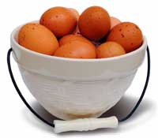

About 95 percent of the 300 million laying hens in the UnitedStates are confined to cages. Many of the birds don't even livewith enough space to spread their wings, and are deprived of freshair and exercise. More U.S. businesses are joining theHumane Society of theUnited States' campaign to discontinue the purchase of eggsfrom caged chickens, including:WholeFoods Market, Trader Joe's, Bon Appetit Management Co.,Earth Fare,Jimbo's?Naturally andWild OatsNatural Marketplace. Several universities, including GeorgeWashington University, the University of Arizona and the Universityof Connecticut, also have stopped purchasing eggs laid by chickensconfined in cages.
You can support this campaign for more humane treatment ofpoultry by choosing 'free-range' or 'cage-free' eggs at yourgrocery store. Even better are eggs from hens raised on pasture.These true free-range eggs often have the added bonus ofbeing higher in nutrients and lower in cholesterol than eggs fromcaged birds.
For information about the health benefits of eggs from pasturedpoultry, visit TheChicken and Egg Page.
You'll also find lots of great advice about raising your ownchicks at the Web site ofpoultry expert, Robert Plamondon.
|
 |
|
|